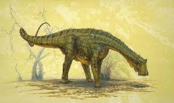

Nigersaurus był dinozaurem roślinożernym z podrodziny Rebbachisaurinae, który żył około 110-105 milionów lat temu, w późnej kredzie, na terenach dzisiejszej Afryki. Jego nazwa pochodzi od miejsca znalezienia skamieniałości - Nigru, gdzie pierwsze szczątki tego dinozaura zostały odkryte. To, co wyróżnia Nigersaurusa spośród innych dinozaurów, to jego wyjątkowy sposób odżywiania się oraz nietypowa budowa czaszki.  Nigersaurus miał szeroką, płaską czaszkę, która była długa i wydłużona. Jego szczęki były wąskie i pełne rzędów zębów ułożonych wzdłuż krawędzi, co przypominało wyglądem daszek kosiarki do trawy. Te liczne zęby, które były w dużej części mniej trwałe niż u innych dinozaurów, wskazują na to, że Nigersaurus mógł się specjalizować w jedzeniu delikatnej roślinności, być może wykorzystując je do wyjęcia i przecierania liści czy młodych gałązek. Mimo że Nigersaurus był stosunkowo małym dinozaurem, osiągającym długość około 9 metrów, jego nietypowy wygląd i sposób odżywiania się czynią go fascynującym obiektem badań paleontologicznych. Jego skamieniałości dostarczają cennych informacji na temat różnorodności ekologicznej i ewolucji dinozaurów, szczególnie tych zręczniejszych w odżywianiu się niż ich olbrzymie, drapieżne krewniaki.

Adres: Zwoleń Radosna 26-700
Kontakt: nr. 797 715 111
email: jurrasicpark@gmail.com
Godziny otwarcia